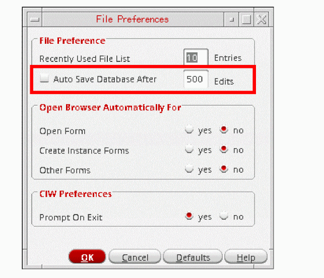

6
Customizing Your Design Environment
You can use the Options menu in your Command Interpreter Window (CIW) to customize your Virtuoso Design Environment:
- Specify user preferences such as: window placement, configuration, and behavior; command input behavior, mouse behavior, and web browser; CIW configuration (see “Specifying User Preferences”)
- Specify when the Library Browser form appears and whether the Exit prompt appears (see “Specifying , Library Browser, and CIW Preferences”)
- Save and restore window position between sessions (see “Saving and Restoring Window Positions”)
- Specify what information appears in the output area of the Command Interpreter Window (see “Changing the Log Filter Options”)
- Check licenses in and out and specify automatic check-in and check-out behavior (see “License Management Using the Software Product License Management Form”; see also “Controlling Automatic Check-In Behavior” and “Controlling Automatic Check-Out Behavior” in the Cadence Library Manager User Guide)
- Define banner menus for the CIW and other licensed applications (see “Customizing the Menu Banner”)
- Customize toolbars (see “Customizing Toolbars”)
- Assign bindkeys to keyboard keys and mouse clicks (see Appendix A, “Bindkeys and Access Keys”)
- Specify the default prefix for instances (see “Specifying the Default Instance Prefix”)
You can customize your design environment such that your settings are loaded for all subsequent sessions by editing various dot files in your home directory (such as .cshrc, .cdsinit, and .Xinitrc). Your settings remain in effect until you edit the dot files again. See also Chapter 7, “Specifying Environment Settings.”
.cshrc and .Xinitrc files are system specific files with content both relevant and irrelevant to Cadence and Virtuoso applications. The .cdsinit file applies solely to Cadence and Virtuoso software.| To customize this | Edit this file |
|---|---|
|
|
|
|
|
|
|
Window appearance and command actions and environment variables for Cadence software |
Specifying User Preferences
You can specify user preferences for the current session using the User Preferences form. To open the User Preferences form, do the following:
-
From the CIW, choose Options – User Preferences.
The User Preferences form appears.
Changes you make on this form, once applied, take effect with the next command you issue or the next window you open. Menu Shortcuts is an exception since the changes made to it will only take place in the next Virtuoso session if you permanently save the changes in the .cdsenv file.
.cdsenv file. Some of the changes will become effective with the next command while others become effective the next time a window is opened.The following procedures are presented:
- Specifying Window Controls
- Specifying Command Controls
- Specifying CIW Controls
- Specifying Dashboard Controls
Specifying Window Controls
Specify window controls, which are settings that affect the position and appearance of windows in the Virtuoso user interface, by using the following options on the
-
In the Window Controls group box, check or clear the following check boxes to indicate the settings you want:
-
(Optional) From the Mouse Prompts drop-down list box, select one of the following:
- Top if you want the prompts to appear along the top edge of each new window
- Bottom if you want the prompts to appear along the bottom edge of each new window
-
None if you do not want the prompts to appear at allThe Mouse Prompts preferences are overridden by any applied workspace regardless of the selected position. Also, if the mouse prompts are set to None before the window is created, then the mouse prompts (containing the mouse bindings line) do not appear even if a workspace has the designated mouse prompts location.
-
(Optional) From the Focus Policy drop-down list box, select one of the following:
- Click if you want to click in the session window or the dockable window to be in focus
- CanvasDelay if you want a session window canvas to be in focus if the pointer remains in it for a specific period of time. This is also the default focus policy.
-
CanvasAsstDelay if you want both the docked assistant windows or the canvas to get focus when the pointer remains in either for a specific period of time
- Change the Focus Delay slider to set the specific period of time for which the pointer must remain in a session window canvas to get focus. The default value is 200 milliseconds, which is 1/5 of a second.
-
(Optional) Use the Default Editor Background Color option to change the background color of the editor window. On clicking this option, the Select Color window displays, from where you can choose the required color.
Default:
Black -
In the Side Dock Tabs drop-down list box, select one of the following:
-
Bottom if you want the tabs for multiple assistants, which are open at the same time, to appear at the bottom of a session window. This is shown in the following figure:
-
Side if you want the tabs for multiple assistants, which are open at the same time, to appear on the side, as shown in the following figure below:
-
Bottom if you want the tabs for multiple assistants, which are open at the same time, to appear at the bottom of a session window. This is shown in the following figure:
For more information on the sideDockTabs environment variable, see Specifying Window Controls in .cdsenv.
-
Click OK (or Apply if you do not want to dismiss the form).
The program applies your settings to subsequently opened windows.
Save your settings and apply them to future sessions through the following steps:
-
In the Command Interpreter Window (CIW), choose Options – Save Defaults.
The Save Defaults Form appears. - Click OK to close the form (or Apply if you do not want to dismiss the form).
The program saves these settings to your .cdsenv file and applies them to future sessions (see Specifying New Default Values).
Specifying Command Controls
Specify command controls, which are settings that affect the behavior of commands and the mouse by using the following options on the User Preferences Form
(in the CIW, choose Options – User Preferences):
-
In the Command Controls group box, mark or unmark the following check boxes to indicate the settings you want:
Check Box Description If you mark this check box, the current location of the cursor in a design window is taken as the first point for the command (the
enterfunction ) when you enter the bindkey for the command.If you do not check this check box, you must click the mouse to enter the first point after invoking the command.
If you mark this check box, the options form associated with an
enterfunction appears when you enter the bindkey for the enterfunction.If you do not mark this check box, you must use the F3 key, or whatever key is bound to the
hiToggleEnterFormcommand, to open the options form. (If the options form is open, thehiToggleEnterFormcommand closes it.) -
(Optional) In the Web Browser field, type a browser executable (default is
firefox). -
(Optional) In the Undo Limit field, select one of the following states:
Undo Limit Description - (Optional) In the Nest Limit field, type or select a different maximum level of nesting.
-
(Optional) Change the Double Click Time by moving the slider to the left or right.
Double Click Time is given in milliseconds. 200 ms is 1/5th of a second. If the program receives a second mouse click within the time period defined by Double Click Time, the action is taken as a double-click. -
(Optional) Change the Beep Volume by moving the slider to the left or right.
-
Click OK to close the form (or Apply if you do not want to dismiss the form).
The User Preferences form closes. Your settings are applied to this session only.
Save your settings and apply them to future sessions by doing the following:
-
In the Command Interpreter Window (CIW), choose Options – Save Defaults.
The Save Defaults form appears. -
Click OK.
The program saves these settings to your.cdsenvfile and applies them to future sessions (see “Specifying New Default Values”).
Specifying CIW Controls
Specify settings that affect the appearance and configuration of the Command Interpreter Window (CIW) by using the following options on the
(in the CIW, choose Options – User Preferences):
-
Select a number in the Input Area Lines spin box to specify the number of previous commands that appear in the input area.
If you specify more lines than are available in the window, the program reduces the size of the output history area to allocate more space to the input area.
Additionally, the height of the CIW will also be modified when the number of input area lines is increased to the point where the CIW is not of a sufficient size to accommodate the changed setting.
You can also use theciwCmdInputLinesenvironment variable to amend the input area line settings (for more information see Specifying CIW Controls in .cdsenv). -
From the Output Wrap Mode drop-down list box, select one of the following values to wrap the messages in the CIW:
- None if you do not want to wrap any messages that appear in the CIW. This is also the default value.
- Word if you want to wrap a message between words. This means that words longer than the width of CIW will appear in the next line and you will see a horizontal scroll bar
- Anywhere if you want to wrap a message between characters. This means that words longer than the width of CIW will appear broken and you will never see a horizontal scroll bar
- Word or Anywhere if you prefer wrapping between words but in case a word is wider than the CIW, messages will be wrapped between characters. Therefore, in this case too you will never see a horizontal scroll bar.
-
Select the Retain Unique Commands check box to remove identical commands from the input area of the CIW. By default, this check box is not checked.
For more information, see "Repeating a Command" in the "Using the Command Interpreter Window" chapter. -
Use the Output Area Lines field to specify the maximum number of lines contained in the output area (accessible by scrolling when the number of lines exceeds the height of the output area).
-
Select the Syntax Highlighting check box to enable checking the syntax or commands entered in the input area of the CIW. By default, this check box appears selected.
Separate commands appear with alternating white and gray background colors. Incorrect or incomplete commands are indicated with light yellow or light gray-yellow background colors, respectively. These are shown in the following figure:If syntax highlighting is turned off, that is, the Syntax Highlighting check box is not selected, all the commands that you enter in the input area will still appear with alternating background colors but no syntax checking will be done.
For more information, see Typing SKILL Commands in the "Using the Command Interpreter Window" chapter. -
Select the History In Place check box if you want to access history commands within the "edit area" of the input area (the edit area is the bottom portion of the input area below the last displayed history line) using the up and down arrow keys. If the check box is not selected, the up arrow key will traverse into the displayed history buffer within the input area. If the check box is selected, you can still traverse into the displayed history buffer by using the left arrow key or by clicking into the area above the edit area.
For more information, see Repeating Commands from CIW in the "Using the Command Interpreter Window" chapter.The CIW built-in history is different from using thehistory()command. The built-in history only displays typed-in commands, whereas, thehistory()command also lists "accelerated" commands (those commands that were run by selecting menus or using bindkeys). For information about the history command, see history() in the Ocean Reference user guide. - Select a number for the Tab Stop spin box to specify the number of character spaces that will represent a tab in both, the input and output areas of the CIW.
-
(Optional) Select or clear the Enter Key Executes Command check box to indicate the setting you want.
-
When selected, you can press Enter to execute a command block typed in the input area.
The command block that contains the cursor will be executed regardless of the position of the cursor within that block. In the following example,^marks the position of the cursor when you press Enter:foreach(term dbGetNetParent printf("%s\n" term->name())) ^
The program evaluates and executes the entire command block.
When the Syntax Highlighting check box is selected, use any of the following key combinations:Shift+Return,Shift+Enter,Ctrl+J, orCtrl+Mto enter a newline when the Enter Key Executes Command check box appears selected.
When the Syntax Highlighting check box is not selected, all of the key combinations mentioned above will execute the command block, that is, send the command block to the SKILL parser. This is because if the commands are not complete, they will not be executed by the SKILL parser until SKILL receives the remainder of the commands. -
When clear, pressing the Enter key will insert a newline. To execute a command when the Enter Key Executes Command check box is not selected, use any of the following key combinations;
Shift+ReturnorShift+Enter. However,Ctrl+JorCtrl+Mkey combinations will continue to insert a newline in this case also.
-
When selected, you can press Enter to execute a command block typed in the input area.
-
Select one or both of the Warning and Error check boxes in the Raise CIW On field. This field specifies whether the CIW should be moved to the front when a Warning and/or an Error has been displayed in the log window. The default is not to move the CIW to the front in either of these situations.
The following environment variables can also be used:
ui raiseCIWonError boolean t/nil
ui raiseCIWonWarning boolean t/nil - Click OK to close the form (or Apply if you do not want to dismiss the form). Your settings are applied only to this session.
Save your settings and apply them to future sessions by using the following steps:
-
In the Command Interpreter Window (CIW), choose Options – Save Defaults.
The Save Defaults form appears. -
Click OK.
The program saves these settings to your.cdsenvfile and applies them to future sessions (see “Specifying New Default Values”).
Specifying Dashboard Controls
You can control the display of
This will display the
Specifying , Library Browser, and CIW Preferences
You use the
- Specifying the Size of the Recently-Used List
- Specifying Auto Save Settings
- Specifying When the Library Browser Form Appears
-
Specifying When the Exit Prompt AppearsUse Options – Save Defaults to apply your changes to future sessions. See Specifying New Default Values for more information.
Specifying the Size of the Recently-Used List
To specify the size of the recently-used file list that appears on the Command Interpreter Window (CIW) menu, do the following:
-
In the CIW, choose Options – Preferences.
The Preferences form appears.
- In the Recently used file list field, type the maximum number of files you want to see on this list. The maximum is 20.
-
Click OK.
The program applies your settings immediately; you do not have to restart the software.Use Options – Save Defaults to apply your changes to future sessions. See Specifying New Default Values for more information.
Specifying Auto Save Settings
To activate, and specify, auto save settings for database edits, do the following:
-
In the CIW, choose Options – Preferences.
The Preferences form appears.
 - Check the Auto Save Database After check box.
-
Optionally, edit the number of database edits required before an auto save is performed. The default is 500.
-
Click OK.
The program applies your settings immediately; you do not have to restart the software.
Use Options – Save Defaults to apply your changes to future sessions. See Specifying New Default Values for more information.
Specifying When the Library Browser Form Appears
To specify when the Library Browser form appears, do the following:
-
In the CIW, choose Options – Preferences.
The Preferences form appears. -
In the Open Browser Automatically For group box, select yes for those occasions when you want the Library Browser to appear automatically.
- Open Form opens the Library Browser form along with the Open form (when you open additional design views)
- Create Instance Forms opens the Library Browser form along with any Add or Create forms that you use to place a component instance in a design
- Other Forms opens the Library Browser form along with other forms (such as the Open form) that you use to open design views or add components
-
Click OK.
The program applies your settings immediately; you do not have to restart the software.Use Options – Save Defaults to apply your changes to future sessions. See Specifying New Default Values for more information.
Specifying When the Exit Prompt Appears
To specify whether an
-
From the CIW, choose Options – Preferences.
The Preferences form appears. - In the CIW Preferences group box, select one of the following Prompt On Exit options:
-
Click OK.
The program applies your settings immediately; you do not have to restart the software.Use Options – Save Defaults to apply your changes to future sessions. See Specifying New Default Values for more information.
.cdsenv file:
ddserv.ciw promptOnExit boolean nil |
|
ddserv.ciw promptOnExit boolean t |
This setting takes effect the next time you run the software.
Saving and Restoring Window Positions
- Saving Window Positions (next)
- Restoring Window Positions
- Saving and Restoring the Position of the CIW Using SKILL
Saving Window Positions
You can save the current position of design windows and forms. The exact information saved depends on your application.
To save window and form positions, do the following:
-
From the CIW, choose Options – Save Session.
The Save Session form appears.
The default location appears in the Look in field. The default name appears in the name field. The type is Session files (*.save).
- (Optional) In the Look in field, change the directory location for the saved session file.
- (Optional) In the name field, type a different name for the saved session file.
-
Click OK.
The program saves session settings to the specified file.
Restoring Window Positions
To restore the window and form positions saved from a previous session, do the following:
-
Start the Cadence software using the
-restoreoption as follows:startupCmd -restore session
where startupCmd is your startup command and session is the session file name that you saved previously.
For example, to start the virtuoso binary and restore the settings saved in the default cdsSession.save file, type the following:
virtuoso -restore cdsSession.save
Saving and Restoring the Position of the CIW Using SKILL
To save and restore the position of the CIW, do the following:
- Move the CIW to the desired location and resize it the way you want it.
-
Note the
hiResizeWindowcommand that the program writes to yourCDS.logfile:cat ~/CDS.log
For example:\a hiResizeWindow(window(1) list(532:0 1257:193))
-
Type the
hiResizeWindowcommand as it appears (everything after the\a) in your.cdsinitfile to cause the program to move and resize the CIW according to these settings the next time you run it.
Changing the Log Filter Options
By default, only error messages, warning messages, program results, and results of running a function appear in the output area of the Command Interpreter Window (CIW). All other log file contents are filtered out.
To specify what information appears in the output area of the Command Interpreter Window (CIW), do the following:
-
Choose Options – Log Filter.
The Set Log Display Filter form appears.
A check box for each item type appears on the form. The backslash-character that appears at the beginning of the line in the
CDS.logfile for each item type appears to the left of each check box. (One backslash-character you might see in theCDS.logfile for which there is no check box on this form is\tfor typed input: Typed input always appears in the output area.) - Check or uncheck each check box accordingly to indicate what items you want to see in the output area
-
Click OK.
The text in the CIW output area is updated to display the items you specified.
To apply these settings to subsequent sessions, type these changes in your .cdsenv.
\# is used in the CDS.log file to filter out statistic information such as output memory use and X resource ID.Customizing the Menu Banner
You can customize the menus that appear on the menu banner and the menu commands that appear on each menu according to your needs. You can define banner menus in the CIW and other applications for which you have a license. Menu files for the Virtuoso Design Environment are installed in
your_install_dir/tools/dfII/etc/tools/menus/binaryName.menus
The following file explains the syntax for menu definitions:
your_install_dir/tools/dfII/etc/tools/menus/README
- For more information on customizing the menus in the CIW, see Customizing CIW Menus in the Design Data Services section of the Virtuoso Design Environment SKILL Reference.
- For information on customizing pull-down, pop-up, and object-sensitive menus in the Virtuoso Schematic Editor see Customizing the Virtuoso Schematic Editor.
- For more information on the function to customize menu banners in ADE Verifier, see Customize Menu Banners.
- For more information on customizing menus in ADE Explorer, see Customizing Menus.
Customizing Toolbars
You can choose to customize existing Virtuoso application toolbars or create new toolbars containing your own preferred functionality.
You can find application-specific toolbar definitions in text files and stored in your_install_dir/share/cdssetup/dfII/toolbars/byApplication.
For example, toolbars specific to the Virtuoso Layout Suite are stored in the following file:
your_install_dir/share/cdssetup/dfII/toolbars/byApplication/Layout.toolbars
Whenever you launch an application, the program locates the toolbar definitions file and creates toolbars accordingly.
You can create custom toolbar definition files and put them in your local .cadence hierarchy so that the program finds and uses these definitions first. See Understanding the .cadence Hierarchy for more information.
Toolbar Definition File Format
The toolbar definition file is an ASCII text file containing toolbar definition information.
Here is an excerpt from Layout.toolbars:
( ( nil name le Toolbar text " " items ( ( nil type action name le ToolbarOpen text "Open" icon "file-open.png" callback "de Open()" disabled t ) ( nil type action name le ToolbarSave text "Save" icon "file-save.png" callback "geSave()"
enableCondition modified
)
)
...
Here is a snippet to include subAction in the actionList.
(
nil
type action
subType subAction
name lebROGSorV
text "Shapes Or Vias"
icon "shapes-vias.png"
)
(
nil
type action
subType subAction
name lebROGWire
text "Entire Wire"
icon "wire-entire.png"
)
(
nil
type action
subType subAction
name lebROGConnect
text "Connected Shapes"
icon "shapes-connect.png"
)
(
nil
type action
subType subAction
name lebROGShapesOnNet
text "All Shapes on the Net"
icon "shapes-on-net.png"
)
(
nil
type action
subType subAction
name lebROGNet
text "Net"
icon "net-category.png"
)
(
nil
type action
subType actionList
name lebROG
text "Selection Granularity"
icon "shapes-vias.png"
actionList (lebROGSorV lebROGWire lebROGConnect lebROGShapesOnNet
lebROGNet)
enabled nil
)
The toolbar name (such as le Toolbar) must be unique across all applications. The text the program uses for the toolbar title and tooltip text (such as " ") need not be unique.
Here is a further example from Symbol_XL.toolbars:
(
(
nil
inheritToolbarsFrom "Symbol"
)
(
nil
name symSearchToolbar
text "Search"
items ( )
)
)
inheritToolbarsFrom option allows you to include the toolbars from another application at any point in a toolbar file (between toolbar definitions).- Format for Main Toolbar Definition
- Format for Item Type action
- Format for Item Type comboBox
- Format for Item Type typein
- Format for Item Type separator
Format for Main Toolbar Definition
Format for Item Type action
|
The SKILL string to be actioned when the |
|
|
The name of the icon file (must be in See also “Toolbar Definition Search Path and Customization”. |
|
|
Sets the toolbar button enablement condition, where the following activation settings can be specified:
|
|
|
Sets the visibility condition for a toolbar. Settings that can be specified are comboBox, typein, and separator. |
|
| Optional Fields | |
|
When this field is included and set to |
|
|
When this field is included and set to |
|
|
When |
|
|
The action is enabled when the cellview has been modified but not saved. |
|
|
The action is enabled when the cellview is editable and at least one object is selected. |
|
|
The action is enabled when the workspace contains at least one assistant. The action is enabled even if all the assistants are hidden. |
|
|
The action is enabled when the property |
|
|
You can specify tooltips for user-defined toolbars. These tooltips are displayed in the status bar of the application. |
Format for Item Type comboBox
Format for Item Type typein
Format for Item Type separator
| Mandatory Fields | |
| Optional Fields | |
|
When this field is included and set to |
Format for item type inheritToolbarsFrom
| Mandatory Fields | |
|
The string name of an application whose toolbars will be inserted in this position in this application’s toolbar. |
Toolbar Definition Search Path and Customization
The program searches for toolbar definition files in locations specified in your setup.loc file. The default location for application-specific toolbar definition files is:
your_install_dir/share/cdssetup/dfII/toolbars/byApplication/appName.toolbars
You can install your customized toolbar definition files so that the software finds those first.
For more information about the setup.loc file, see the
Using Toolbar Manager
Toolbar Manager lets you make incremental and local changes to the Virtuoso application toolbars. You can add, edit, or remove toolbars and toolbar items of applications whose toolbars are defined in Virtuoso Design Editor toolbar files.
hiCreateToolbar.
Toolbar Manager saves your changes in the applicationName.overlay files in the .cadence directory present in your home directory. When you launch an application, the Virtuoso design environment creates toolbars based on the applicationName.toolbars file, overlaid by the applicationName.overlay file. This method ensures the seamless implementation of your changes even after you upgrade the Virtuoso installation.
For details on the .cadence hierarchy, see Understanding the .cadence Hierarchy.
The .overlay files follow the same filename convention as the .toolbars files. For example, the .toolbars file of Schematic Editor is Schematics.toolbars. The overlay file of this application is Schematics.overlay.
To customize toolbars of a supported application using Toolbar Manager:
-
Do one of the following:
- Choose Options – Toolbars from the Virtuoso CIW.
- Choose Window – Toolbars – Customize from within a Virtuoso session window.
-
Right-click the toolbar in the application and select Customize.

-
Select the application from the Application list. The toolbars of that application appear in the Toolbar tree.
- Toolbar Manager displays the list of applications in their hierarchical order. Sub-applications typically inherit various toolbars from the parent applications. For example, when you add a new toolbar in Schematics, it also becomes available in Schematics XL.
- To search for any data in the toolbars of the selected application, use the Search box. Toolbar Manager filters the list of items based on your search string.
- You can expand or collapse the toolbars using the icons on the bottom-left corner.
- The Toolbar tree displays items with unsaved changes in blue text.
-
Change the application toolbars, as required.
To do this... Perform these steps... - Right-click the Toolbar tree and click Add or click Add at the bottom of the form to access the Add menu.
- Click Toolbar.
- Specify the toolbar details. For more information, see Format for Main Toolbar Definition.
- Select the toolbar in the Toolbar tree.
- Click the Add button to access the Add menu.
-
Select the item type. You can choose from:
- Action: Adds an action item to perform an action.
- Type-in: Adds an item with an input box.
- Combo: Adds an item with a list for selection.
- Separator: Adds a separator for differentiating between items.
-
GetAction: Passes the name of an item to the action retrieval function specified on the item's toolbar. This option allows actions to be reused.By default, the callbacks for type-in (or text) and drop-down list box fields are only triggered if the value has changed. If you want the callback to be triggered when the
EnterorReturnkey is pressed regardless of whether the value in the field has changed, select the Always execute callback when "Enter" key is pressed check box.
- Specify the item details on the Edit panel. For details, see “Toolbar Definition File Format”.
-
Select the item on the Toolbar tree, drag it to the new location, and drop the item.
The location where you can drop the item is illustrated by a horizontal line between the items. You cannot drop the item to a location where the line is not visible or the cursor changes to the forbidden cursor. Releasing the mouse button in a prohibited location cancels the drag operation and returns the selection to the original location.

- To save the changes without closing Toolbar Manager, click Apply. To save the changes and exit Toolbar Manager, click OK.
- Restart the application to implement your changes.
The following figure illustrates how you remove the Check and Save item from the toolbar of Schematic Editor.
Resetting Toolbar
You can revert changes by resetting the toolbars on a per-application basis. To do this, you need to click the Reset button on the Toolbar Manager form. Once you click the Reset button, the Reset Toolbars dialog box is displayed.
This dialog lists all the applications in which a toolbar or an item has been added, removed, or edited. Select the application that you need to reset by clicking the check box and click the OK button.
 button.
button.Troubleshooting Information for Toolbar Manager
Changes to the toolbar configuration are static, that is, toolbar configuration is determined at the time the window is instantiated. The behavior specified for a toolbar may be overridden dynamically through SKILL, and this behavior, if inconsistent with the static behavior, can result in confusion.
This inconsistency is typically encountered when a toolbar item that you did not define is customized—toolbar items defined by others can have side effects that might not be immediately obvious when looking at the toolbar item details in Toolbar Manager. SKILL callbacks associated with toolbar items can manipulate the toolbar item directly and change the expected behavior.
One example is the use of multiple checkable toolbar buttons which appear to function like radio buttons, where only one button can be selected at a time. In particular, when a checked item in a radiobutton group is pressed again, it may be desirable to remain checked, rather than toggling to an unchecked state. It is also typical to ensure that only one item is checked at a time, such that checking one item will uncheck any others in that group. This is typically implemented via a SKILL callback for each item—based upon which button was pressed, the callback will adjust all buttons to reflect the desired state. In this case, if one is not aware of these effects of the SKILL callback, the behavior will seem inconsistent with the behavior specified for those toolbar items.
Understanding the .cadence Hierarchy
The .cadence hierarchy contains local customizations for files that Cadence provide. For each location specified in the setup.loc file, the program first searches for .cadence directories.
The following structure is used for .cadence:
<directory>/.cadence/[<user>]/<product>/<tool>/[<version>]/<files>
-
Prior to saving for the first time, the
userdirectory is optional and not likely to exist in system areas. Whenever data is saved however, it will always be saved under a user-specific directory. -
The
versionnumber is also optional, but should always be used when saving. This setting is optional in order to support the loading of default settings from an installation hierarchy. -
For any given
.cadencedirectory, the options in the user-specific subdirectory have a higher priority than the non-user-specific options.
This hierarchy structure provides for solid file management when multiple versions of Cadence tools are installed in a common directory.
.cadence as the top-level directory name.
Your local .cadence directory can contain the following file and subdirectories of information:
| File or Directory | Description |
|---|---|
|
The program creates this file to maintain information that appears in the History tree on the ADE Explorer Data assistant pane |
|
|
Directory containing an |
|
|
Directory you can create to contain |
|
|
When you save a |
|
|
If you specified a |
|
If you save any job policies, the program creates a jobpolicy subdirectory in your .cadence directory to maintain job policy definitions.
Files and directories in the your_install_dir/share/cdssetup/dfII hierarchy include:
| or Directory | Content |
|---|---|
|
|
|
|
Default library definitions; see |
|
|
|
|
|
Default display resource settings; see the |
|
|
|
|
|
Application subdirectories containing Cadence-provided |
Return to top